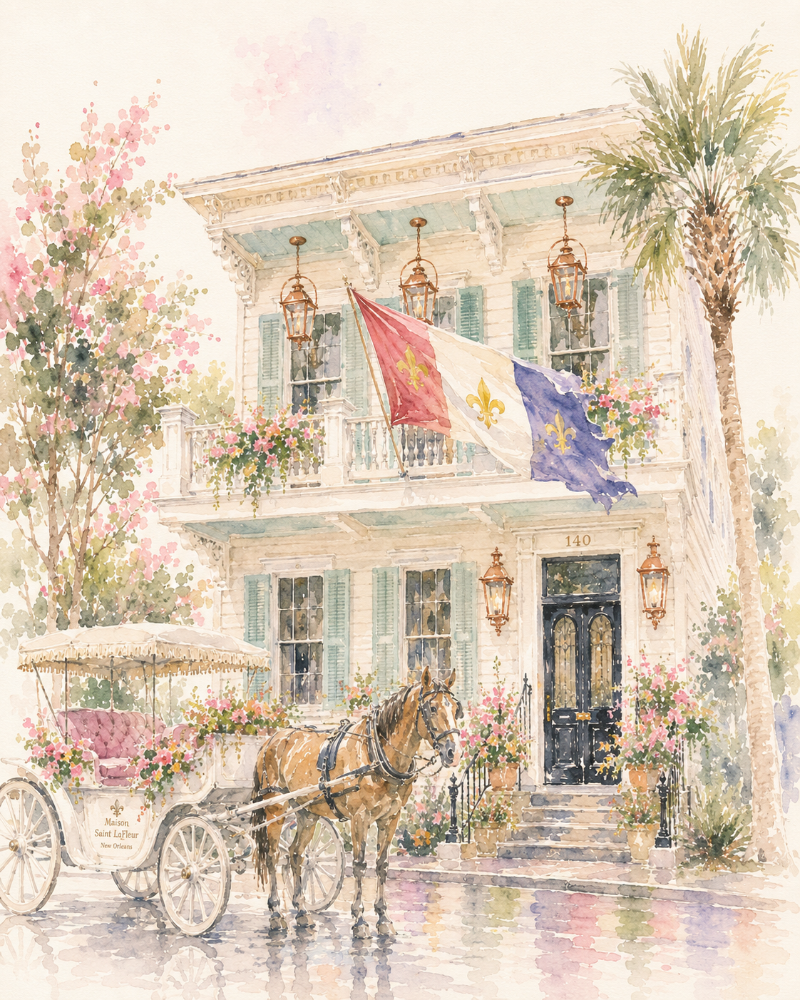

OUR PICK FOR GROUPS
Maison Saint LaFleur
The private-house experience with the polish of a boutique stay.
Beautiful shared spaces, a chef's kitchen and unmistakable New Orleans character make the stay part of the trip—not simply where everyone sleeps. For groups who actually want to be together, Maison Saint LaFleur is the home base we'd start with.
EXPLORE MAISON SAINT LAFLEUR →